abide by: To cooperate with that company, he had to abide by the contract's conditions.
(tuân theo) v

agreement: Finally, they could reach an agreement on how to divide profits.
(hợp đồng) n
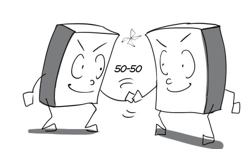
assurance: Raspberry gave us the assurance that all their products were imported from the US.
(bảo đảm) n

cancellation: The cancellation of the contract made Mr Thomas very disappointed.
(hủy bỏ) n

determine: The contract's conditions will be determined by the two CEOs.
(xác định) v
engage: After doing a thorough research, Peter decided to engage in a new business.
(tham gia) v

establish: Blueway JSC was established in October 2010.
(thành lập) v
obligate: According to the contract, we were obligated to produce 2 million flashcards a month.
(bắt buộc) v
party: The two parties agreed to collaborate with each other on this project.
(bên) n
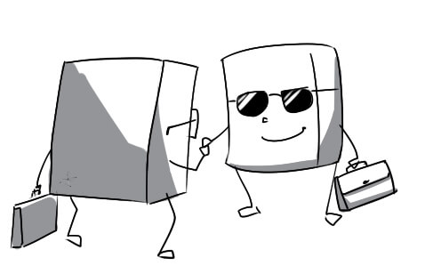
provision: My company was in charge of the provision of drinking water for this conference.
(sự cung cấp) n
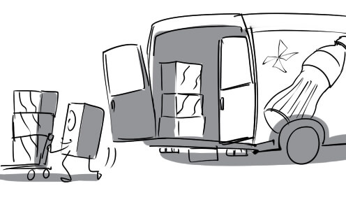
resolve: The CEO has to resolve the issue quickly because the employees are getting angry.
(giải quyết) v

specific: He gives me specific instructions on how to prepare contracts so that I won't make mistakes.
(rõ ràng) a
attract: This store hired beautiful promotional girls to attract customers.
(thu hút) v
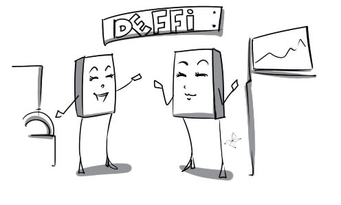
compare: David carefully compared iPhone 5 with Galaxy S3.
(so sánh) v

competition: There is now intense competition between companies in the domestic seafood market.
(cạnh tranh) n

consume: My car consumes too much gasoline.
(tiêu thụ) v

convince: The real estate agent convinces me to buy this house for $100,000.
(thuyết phục) v
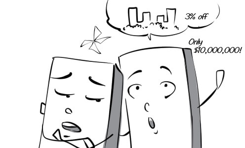
currently: I'm really sorry but the director is currently having a discussion with his partner.
(hiện tại) adv
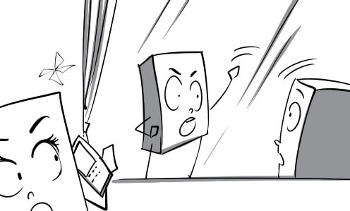
fad: Armani hairstyle used to be a fad in the early 2000.
(mốt nhất thời) n
inspiration: Women's beauty is a rich source of inspiration for Dior commercials.
(cảm hứng) n
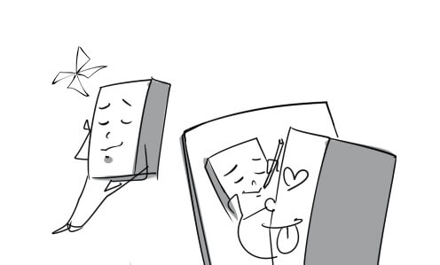
market: Moonlight is marketed on TV as the best dishwater in the world.
(chào bán) v
persuasion: After a little persuasion, the customer agreed to buy our product.
(thuyết phục) n

productive: The workers had a very productive day at work.
(có năng suất) a

satisfaction: The warranty service gives a huge satisfaction to our customers.
(sự thỏa mãn) n
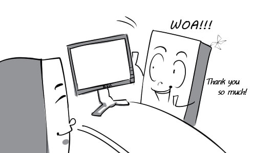
characteristic: Diligence is one of the good characteristics of our company's employees.
(đặc điểm) n
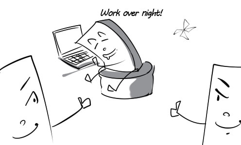
consequence: Unhealthy eating habits can lead to serious health consequences.
(hậu quả) n

consider: Tuan is considering selling his laptop because he is out of money.
(xem xét) v
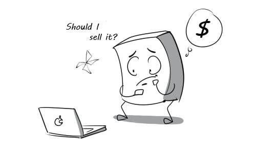
cover: The insurance will cover you against personal injury.
(bảo hiểm) v

expiration: You shouldn't consume foods after their expiration date.
(sự hết hạn) n
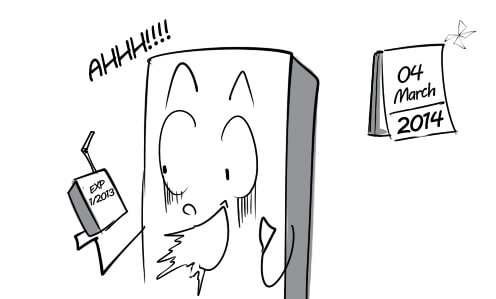
frequently: The waiter knows his name because he comes to this restaurant very frequently.
(thường xuyên) adv
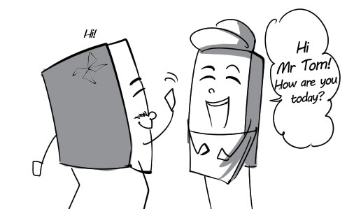
imply: What do you want to imply when you say that he eats like a pig?
(ngụ ý) v

promise: The seller promised me that this insurance would pay $100,000 to my family if I died in an accident.
(hứa hẹn) v
protect: The witness was protected by the police 24/7.
(bảo vệ) v

reputation: Apple has a worldwide reputation for high quality of design.
(tiếng tăm) n
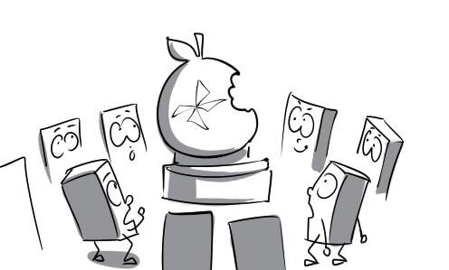
require: The nurse requires me to bring my insurance card when I come back next week.
(yêu cầu) v

vary: The prices of apples vary according to their quality.
(thay đổi) v
address: The manager is giving an address to the board of directors.
(bài diễn văn) n

avoid: A detailed business plan will help us avoid major risks.
(tránh) v

demonstrate: The positive results demonstrate that our business plan is working very well.
(chứng minh) v
develop: After 3 years of living abroad, Mr Tran is amazed at how rapid Ho Chi Minh city has developed.
(phát triển) v
evaluate: Ms Nga is evaluating the job performance of the new illustrator.
(đánh giá) v
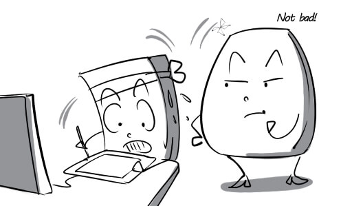
gather: Andrew gathered information for the plan from many sources.
(tập hợp) v

offer: Jack offered to help me finish my job.
(đề nghị) v

primarily: Their purpose is primarily to convince the director to approve this plan.
(chủ yếu) adv
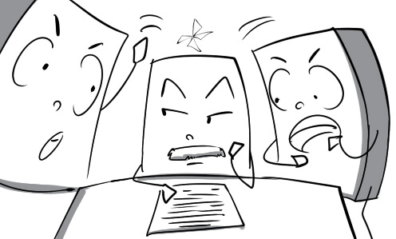
risk: We shouldn’t carry out this plan because the risks outweigh the benefits.
(rủi ro) n

strategy: The director is presenting the marketing strategy for the new product.
(chiến lược) n
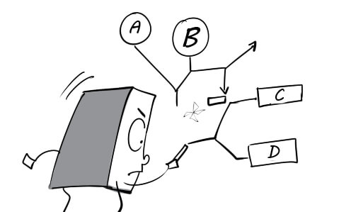
strong: There are strong arguments for and against the new business plan.
(mạnh mẽ) a
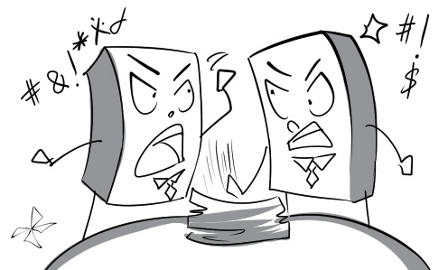
substitution: All the employees are shocked at the substitution of the general manager.
(thay thế) n

accommodate: This hotel was large enough to accommodate the needs of the conference attendees.
(đáp ứng) v

arrangement: My team made all the arrangements for the conference.
(sắp xếp) n
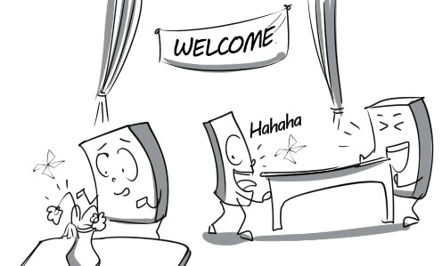
association: This fair was organized in association with blueup English club.
(kết hợp) n

attend: There were thousands of people attending this conference.
(tham dự) v

get in touch: I'm trying to get in touch with my friend who lives in New York.
(liên lạc) v

hold: The hall can hold about 100 attendees.
(chứa đựng) v
location: This cafeteria is the location of blueup's offline meeting.
(địa điểm) n

overcrowded: The hall was overcrowded because the number of guests was much greater than expected.
(chật ních) a
register: All the guests have to register at the front desk.
(đăng ký) v

select: He wonders if he should select a megaphone or a microphone to make his speech.
(chọn) v

session: The national convention was divided into three sessions.
(phiên, kỳ) n
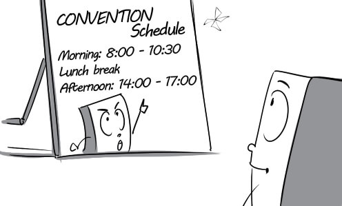
take part in: My brother takes part in a variety of sports activities.
(tham gia) v

access: You have to enter your user name and password in order to access this page.
(truy cập) v
allocate: The accountant allocated work-related allowance to employees.
(phân bổ) v
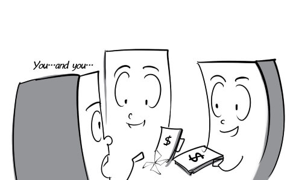
compatible: This graphics editing program is compatible with the operating system.
(tương thích) a

delete: Peter deletes the files that he doesn't need anymore.
(xóa) v
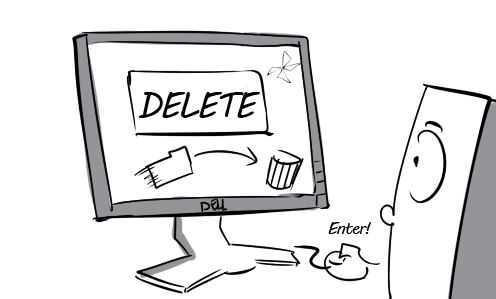
display: Lyrics are displayed at the bottom of the screen.
(hiển thị) v

duplicate: I duplicated this folder because it was very important.
(sao chép chính xác) v
failure: All my efforts to remove the virus ended in failure.
(thất bại) n
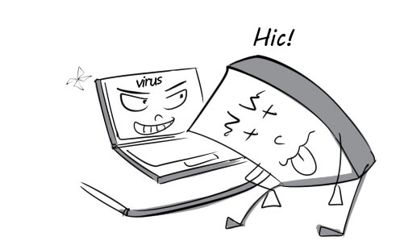
figure out: Finally, I can figure out how to use this laptop.
(hiểu ra) v

ignore: My team leader always ignores my initiatives, which makes me very sad.
(lờ đi) v
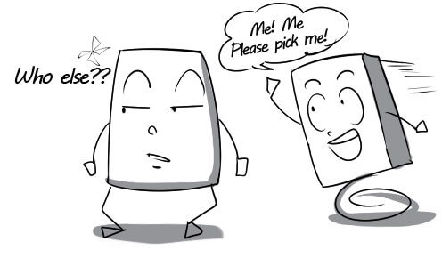
search: Daniel is searching for information he needs on the Internet.
(tìm kiếm) v

shut down: Don't forget to shut down your computer before leaving the office.
(tắt máy) v

warning: The screen suddenly displayed a virus warning when I opened the file.
(cảnh báo) n
affordable: Thanks to the discount program, I could buy this laptop at an affordable price.
(chi trả được) a

as needed: My assistant has his own job but he will come here immediately as needed.
(cần thiết) adv

be in charge of: In this company, Vi is in charge of graphic design.
(đảm nhiệm) v

capacity: The capacity of this hard disk drive is 500 GB.
(dung lượng) n
durable: I am very surprised at how durable this cell phone is.
(bền vững) a
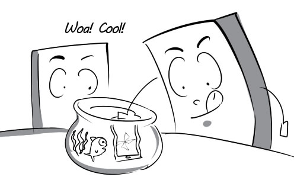
initiative: Peter took the initiative in undertaking the task when the manager was on vacation.
(bước đầu, sự khởi đầu) n

physically: Peter got physically sick after staring at the rotating spiral on the screen for a few minutes.
(một cách vật lý) adv

provider: We are one of the biggest providers of computer in the country.
(nhà cung cấp) n

recur: I tried my best to fix the computer problem but it kept recurring.
(tái diễn) v

reduction: The store gave a 50% reduction in the price of the laptops.
(sự giảm bớt) n
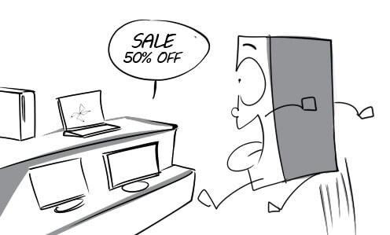
stock: My company stocks a great amount of paper to print flashcards.
(tích trữ) v

appreciation: The manager presents a small amount of money to Peter in appreciation of his work.
(sự cảm kích) n

bring in: The CEO brought in a new secretary yesterday.
(tuyển dụng) v

casually: I can chat to my boss very casually outside the office.
(bình thường, không trang trọng) adv

code: Workers must follow a strict code of conduct.
(quy tắc) n
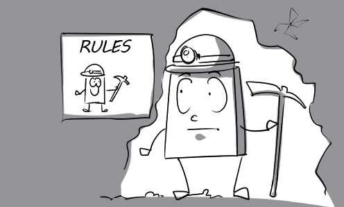
expose: My mentor exposed me to the various functions in this company.
(giúp trải nghiệm) v

glimpse: I caught a glimpse of my old classmate in the crowd.
(cái nhìn lướt qua) n
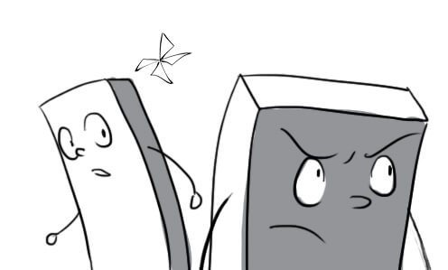
outdated: Peter is using an outdated way to start a fire.
(lỗi thời) a
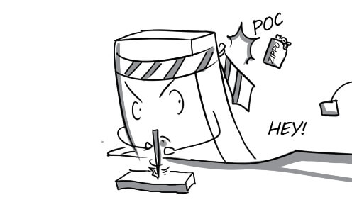
practice: The new secretary practiced answering telephones on her first day at work.
(luyện tập) v
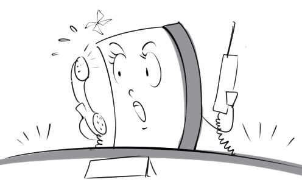
reinforce: My brother reads a lot of books to reinforce his knowledge and skills.
(tăng cường) v

verbal: They burst into a stream of verbal abuse.
(bằng lời nói) a